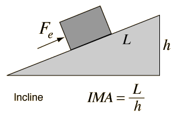

The Incline
|

|
The incline is one of the so-called "simple machines" from which many more complex machines are derived. By pushing an object up a slanted surface, one can move the object to height h with a smaller force than the weight of the object. If there were no friction, then the mechanical advantage could be determined by just setting the input work (pushing the object up the incline) equal to the output work (lifting the object to height h). |
The resistance force Fr =mg, the weight of the object. It takes work mgh to overcome that resistance force and lift the object to height h. By doing work on it we give it gravitational potential energy mgh. By exerting Fe to push the object up the incline, we do the same amount of work in the ideal frictionless case. So setting the works equal FeL = Frh, we arrive at the ideal mechanical advantage Fr/Fe = L/h shown in the illustration.
Another approach to the incline is just to calculate the amount of force Fe required to push the object up a frictionless incline. If the forces are resolved as in the standard incline problem, you find that the required force is Fe=mgsinθ = mgh/L = Fr (h/L) .
|
Index
Torque Concepts |